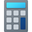

檔案總管
快速存取
此電腦
💡 本瀏覽器已成功對接 Langsearch 即時聯網搜尋引擎 API，為您提供真實世界即時資訊！
這是一個100% 本地自製運行的 Word 文字編輯器！
您可以自由在這裡打字、排版，甚至使用上方的工具列進行文字客製化設計。
| A | B | C | D | E | F | G |
|---|
得分
0
已消除行數
0
下一個方塊
操作：鍵盤 ← → 移動，↑ 旋轉，↓ 加速落，Space 瞬間落下。
設定
設定
這是為您專門打造的 Windows 11 本地完全獨立自製版。
1. 自製 Office 系列：單機自製 Word、Excel、PowerPoint，隨時隨地離線開啟使用，完全排除任何報錯！
2. Store 商店與小恐龍大升級：Microsoft Store 圖示完美調用您下載的 `store.png` 官方圖片。另外，我們將小恐龍遊戲的圖示以及遊玩角色全部升級為超高畫質的經典 2D 像素綠色向量 SVG 影像，質感大幅躍升！
3. Minecraft 已預設安裝並完美保護鎖定：Minecraft 圖示預設就全部直接解鎖！當點擊開啟時，鍵盤鎖定將自動對接，WASD 與 Space 不再失靈！
4. 上架自製俄羅斯方塊：前往 Microsoft Store 下載可直接解鎖獨立桌面/工作列 APP！
5. 支援按 F11 鍵一鍵無縫進入或退出「全螢幕」體驗模式！
檔案